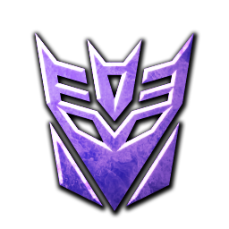

 Transformers: Fall of Cybertron
Details
 |
|
| Playtime | Not Played |
| Last Activity | Never |
| Added | 4/24/2025 5:28:04 |
| Modified | 4/30/2025 1:48:50 |
| Completion Status | Not Played |
| Library | Playnite |
| Source | |
| Platform | $PC (Windows) |
| Release Date | 8/21/2012 |
| Community Score | 96 |
| Critic Score | 81 |
| User Score | |
| Genre | Action Shooter |
| Developer | High Moon Studios Mercenary Technology |
| Publisher | Activision Noviy Disk |
| Feature | Controller Support Full Controller Support Multiplayer Single Player |
| Links | PCGamingWiki HowLongToBeat IGDB SteamDB StrategyWiki MobyGames Wikipedia |
| Tag | 2D Abstract Action Colorful Comedy Difficult Fast-Paced Funny Great Soundtrack Indie Minimalist Platformer Puzzle Platformer Time Attack |
Description
Transformers: Fall of Cybertron is a third-person shooter video game based on the Transformers franchise, developed by High Moon Studios and published by Activision. It is the sequel to the 2010 video game Transformers: War for Cybertron, and directly follows the events of that game, as the Autobots struggle to defeat their Decepticon foes in a civil war for their home planet of Cybertron. The game was released on August 21, 2012, in North America and on August 24, 2012, in Europe for Microsoft Windows, PlayStation 3, and Xbox 360. In 2016, it was released for PlayStation 4 and Xbox One on August 8, in Australia and on August 9, in North America. Mercenary Technology developed the game's Windows version, while Fun Labs developed the PlayStation 4 and Xbox One versions.
Set as the prequel to Transformers: Prime, the game tells the story of the Transformers, fictional robotic life forms, and the final days of conflict on their home planet of Cybertron. An origins subplot for the Dinobots is also told, reimagined from the Transformers: Generation 1 continuity. Other subplots also tell an adapted story for several characters. Some of the voice cast from the 1984 series The Transformers return to reprise their roles, including Peter Cullen as Autobot leader Optimus Prime and Gregg Berger as Grimlock. Other actors return to reprise their roles from Transformers: War for Cybertron.
Fall of Cybertron received generally favorable reviews from critics. Critics generally felt that the game was true to the Transformers franchise and provided good fan service, but some thought that the story pace slowed at times. Gameplay was mostly praised, but some reviewers cited the removal of War for Cybertron's cooperative campaign as a low point. Graphics and audio also received broadly positive comments. A spin-off, Transformers: Rise of the Dark Spark, which is partially set between War for Cybertron and Fall of Cybertron, was released in June 2014. Later, following the expiration of the licensing deal between Activision and Hasbro, the game title was delisted from digital storefronts.
Gameplay
Transformers: Fall of Cybertron, like its predecessor Transformers: War for Cybertron, is a third-person shooter. Players can control each transformer in both its robot and vehicle forms. Instead of a traditional health system, the game features a system similar to the Halo series of video games. The player character has both a regenerating shield and health, the latter of which can be replenished by a health pack. The weapon selection in Fall of Cybertron is expanded, with new weapons that can take on very significant upgrades, including one that allows a weapon to fire up to 75% faster. These are purchased through Teletran 1 kiosks found throughout the game.
Every character has been given their own unique ability. For example, Jazz can fire a grappling hook to reach high or distant places, Optimus Prime can command the massive Metroplex, and the Combaticons have the ability to combine into the Decepticon Bruticus. Segments in which players control Bruticus are designed to accommodate its larger size. Scale is maintained so the character towers over enemies. The Autobot Grimlock, who transforms into a robotic Tyrannosaurus, is controlled differently than other characters. Carrying only a sword and shield, Grimlock cannot transform at will, instead accumulating rage as he battles opponents. When he gains enough rage, Grimlock is able to transform and inflict massive damage. The online cooperative campaign play featured in the first game has been removed in favor of levels that utilize each character's specific abilities.
The survival mode Escalation from War for Cybertron returns. In this mode players must defend against increasingly difficult waves of enemies. As gameplay progresses, new sections of the level open, which give players access to upgraded weapons and abilities. Franchise characters are used in Escalation, while players can customize one of four character classes (Scientist, Infiltrator, Destroyer, and Titan) on 9 different maps (Sewers, Spire, Abandoned, Bowels, Array, Corrosion, Tempest, Convoy, Desolation) in competitive multiplayer. Autobot and Decepticon Transformers can be customized with parts earned through a ranking system or purchased through the game's marketplace. Several parts from famous Transformers can be used, such as heads, torsos, legs, and arms. Hundreds of pieces and color options are available. Players can also buy and upgrade their gear.
Synopsis
Setting
Transformers: Fall of Cybertron is a direct continuation of Transformers: War for Cybertron. Giant robotic life forms known as Transformers are at civil war. Two factions, the Autobots and the Decepticons, vie for control of their home world, Cybertron. The events of the previous game have left the planet unable to sustain life, and the Autobots, desperate to ensure the continued existence of the Transformer race, seek to flee the planet. The Decepticons, still bent on domination, will stop at nothing to ensure that the Autobots either submit to the Decepticons or are eliminated. Fall of Cybertron depicts the final battle between the two robot factions, which results in the desolation of their home world, forcing the Autobots to seek refuge in our galaxy, the Milky Way. The developer, High Moon Studios, hoped to show a darker tone than the original game. Game Informer's Matt Miller stated that the game "changes and improves upon so many of the fundamental ideas that the developer considers the game a natural successor rather than a true sequel."
.mw-parser-output .citation{word-wrap:break-word}.mw-parser-output .citation:target{background-color:rgba(0,127,255,0.133)}^a Not a playable character ^b Downloadable content, playable only in multiplayer ^c Alternate skin available (pre-order/downloadable content) ^d Slag was renamed Slug in the game due to Slag being a derogatory term in some cultures ^e Playable in escalation
In the final days of the war for Cybertron, the Autobots attempt to flee their dying homeworld aboard the Ark, but their spacecraft comes under attack by the Decepticon flagship Nemesis. While Optimus Prime engages Megatron on the outer surface of the Ark, Bumblebee is sent by Ratchet to find and assist the former. Just as Megatron is about to fire a killing shot, Bumblebee jumps in and takes it for Optimus.
Six days earlier, Optimus leads the defensive against the Decepticons, who are attacking the docked Ark. After assisting Perceptor, Ironhide, and Warpath, Optimus accidentally awakens the city-sized ancient Autobot Titan Metroplex, who helps turn the tide of the battle; he destroys two of the Decepticons' Warp Cannons but is seemingly killed by the last. While trying to destroy the last cannon himself, Optimus is captured by Starscream and the Combaticons, who bring him before Megatron. Just as Megatron is about to execute Optimus, Metroplex comes back online and crushes him to death. Starscream assumes leadership of the Decepticons and orders a tactical retreat. Despite their victory, the battle cost the Autobots all of their Energon, leaving them unable to fuel the Ark.
Meanwhile, Jazz, Cliffjumper and Sideswipe, tasked by Optimus with investigating the disappearance of the Lightning Strike Coalition Force - consisting of Grimlock, Slug, Sludge, Snarl and Swoop - track their signatures to the Sea of Rust. While investigating a Decepticon presence in the area, they find Sludge's remains and an enormous tower in a lake of Energon firing a bright beam into Cybertron's orbit, operated by the Decepticon scientist Shockwave. Shockwave explains that the tower is a Space Bridge, used by their ancestors to find and travel to other planets, and flees after commanding a swarm of Insecticons to attack the Autobots. After destroying the tower, Cliffjumper and Jazz escape with Sideswipe and report back to Optimus.
After the Autobots salvage the Energon from the tower, Starscream and Combaticon leader Onslaught devise a plan to ambush the Autobot transport carrying the Energon and reclaim it. After the Combaticons Vortex, Brawl and Blast Off destroy a bridge the transport must cross, Starscream leads an airstrike on the transport despite Onslaught's warning about its anti-aircraft cannons. Meanwhile, Swindle destroys the transport's wheel struts, causing it to activate its flight mode and take off. Starscream orders a retreat, but the Combaticons ignore him and board the transport, combining to form the giant Decepticon Bruticus. However, they inadvertently cause the transport to crash, losing half of the Energon, and Starscream arrests them for insubordination. Meanwhile, beneath the Decepticon capital of Kaon, Soundwave resurrects Megatron in a new, superior body. Megatron then challenges Starscream for leadership of the Decepticons during the latter's coronation and chases him away. After freeing the Combaticons, Megatron orders a full-scale assault on an Autobot stronghold in the ruins of their capital city, Iacon. There, Megatron finds the Decepticon Titan Trypticon, trapped in stasis lock since his defeat at Optimus' hand, but his intact power core allows Megatron to permanently transform him into the Nemesis.
Seeking revenge against Megatron, Starscream infiltrates Shockwave's tower laboratory and finds an imprisoned Grimlock. Starscream offers him freedom in exchange for his loyalty, but Grimlock escapes by throwing Starscream into the restraint controls. As he fights his way through the lab in search of Swoop, Slug, and Snarl, Grimlock learns that they were all captured while investigating the Space Bridge in the Sea of Rust and subsequently experimented on by Shockwave, giving them new alternate forms. Shockwave reveals that he is building a new Space Bridge to find another planet brimming with energy for the Decepticons to plunder, and based Grimlock's team's new forms on creatures he found on one such planet. After rescuing his teammates from the Insecticon swarm leaders Hardshell, Kickback and Sharpshot, Grimlock contacts Optimus and informs him of the situation, then attempts to destroy the Space Bridge himself but is re-captured by Shockwave. He escapes by transforming into his dinosaur form and biting off Shockwave's left arm, then destroys the tower. This destabilizes the portal in Cybertron's orbit, giving the Autobots an opportunity to leave via the Ark before it closes.
After Metroplex sacrifices himself by transferring all of his Energon to the Ark, the Autobots make a run for the portal but are intercepted by the Nemesis. Soundwave leads the first wave of troops onto the Ark through giant cables and deactivates the ship's automated defense system, while Jetfire destroys the cables and helps Jazz blast Bruticus off the ship after the Combiner destroyed the Ark's fuel line. The game then returns to the opening scene of Bumblebee sacrificing himself to save Optimus from Megatron. The two resume their fight, but before the winner can be decided, both ships are pulled into the portal to an unknown destination. The portal then closes, leaving Cybertron a deserted ruin.
Development
During an investor conference in November 2010 Hasbro confirmed that a sequel to the 2010 game Transformers: War for Cybertron would be developed. Transformers: Fall of Cybertron was officially announced on October 6, 2011, in an article posted on the gaming magazine Game Informer's website. In the article, Game Informer noted that their November issue would contain an exclusive feature on the upcoming game and the cover would include concept art. 1UP.com's Chris Pereira wrote that fans would be excited to hear another original Transformers game from High Moon Studios was being developed, since the game based on the film Transformers: Dark of the Moon did not meet critical expectations. Henry Gilbert of GamesRadar was also pleased to see an original game being developed and said "we're glad [...] developer High Moon Studios is back to what it does best: crafting new/old adventures for the Autobots and Decepticons". High Moon Studios originally announced that they would not be releasing Fall of Cybertron on the Microsoft Windows platform but changed their plans. The Windows version was completed by Mercenary Technologies, while High Moon Studios handled the PlayStation 3 and Xbox 360 releases. The game is powered by Epic Games' Unreal Engine 3 and utilizes the Havok physics engine.
Design
Some characters who previously appeared in War for Cybertron feature updated appearances and transformation schemes, or moving parts that animate regardless of player action, similar to breathing. The character Optimus Prime was redesigned for a "more warrior-type feel", with more bulk added to his body mass. The weaponry in Fall of Cybertron was also modified and enhanced; the designers of the game put out a call to everyone in the studio for new weapon ideas. Matt Tieger of High Moon explained that in addition to new designs, each weapon could be upgraded, continuing, "We really made a conscious choice to make every upgrade a significant improvement, so one upgrade might increase your firing speed by 75%. We could have made the system so that there were a lot of upgrades that each improved your guns a little bit, but we wanted to make each upgrade feel like this giant thing. That way when players buy it they’re really going to feel the difference."
At E3 2012 veteran Transformers voice actors Peter Cullen and Fred Tatasciore were confirmed to reprise their respective roles of Optimus Prime and Megatron. Tatasciore also voices Ratchet and the city-sized Transformer Metroplex. Gregg Berger voices Grimlock from The Transformers for the first time in twenty-five years. Other cast members include: Troy Baker as Jazz, Jetfire, and Kickback; Keith Szarabajka as Ironhide; Nolan North as Cliffjumper, Bruticus and Brawl; Steven Blum as Shockwave, Swindle and Sharpshot; Isaac C. Singleton Jr. as Soundwave and Sam Riegel as Starscream. Jim Ward provides the voice for Perceptor, David Boat voices Vortex, Travis Willingham performs as Sideswipe, Slug and Onslaught, Jamieson Price voices Warpath, and Keith Silverstein portrays Blast-Off and Rumble.
The game features Stan Bush's song "The Touch", originally featured in the 1986 film The Transformers: The Movie. The rerecorded 2007 version was used during promotional trailers for preorder items, while the game's end credits utilize both it and a remixed version of the song. The remixed version, called the "Power Mix", was based on the melancholy "Sam's Theme" version of the song, which was created for possible inclusion in the live-action film Revenge of the Fallen. The credits begin with the "Power Mix" version, and segue into the 2007 version. Bush later released the "Power Mix" on iTunes the following September.
As of 2020, Activision has discontinued support for Fall of Cybertron, and the game's multiplayer servers have been shut down.
Marketing and release
The first official cinematic trailer for the video game was shown at the 2011 Spike TV Video Game Awards on December 10, 2011 and featured the song "The Humbling River" by Puscifer. A second cinematic trailer, dubbed "Our World", was released in March 2012. Gameplay was shown during the 2012 Botcon convention. On July 5, 2012, the UK release date for the game was brought forward one week to August 24, 2012. A trailer featuring an in-game look at the city-sized Transformer Metroplex was released with the announcement. The song featured was an Everlove cover of the Siouxsie and the Banshees song "Cities in Dust". The launch trailer was released on August 17, 2012, and featured the theme "The Last Kingdom" by Alessio Nanni and Daniel Lessner. The game was released in North America on August 21, 2012, and Europe on August 24.
A toy line based on the game was manufactured by Hasbro under the Transformers: Generations banner. Bruticus, a character formed by combining five Decepticons, is part of the line. Other figures include Optimus Prime, Jazz, and Shockwave. It was announced the toy line would be released August 21, 2012, in North America, a week earlier than originally planned.
In North America, Amazon.com and video game retailer GameStop offered preorder codes for downloadable content. GameStop offered a G1 Retro Pack that unlocks a The Transformers Generation 1 themed Optimus Prime skin, a Generation 1 inspired Megatron rifle based the character's alternate mode, and a Shockwave Blast Cannon. Amazon offered a Generation 2 Bruticus skin. In the United Kingdom, Play.com also offered preorder codes. The codes unlocked the Dinobot Swoop for use in the competitive multiplayer.
Multiple downloadable content packs were released. The Multiplayer Havoc Pack launched on the game's release date of August 21, 2012, and contains five characters for use in multiplayer: Perceptor, Ultra Magnus, Blast Off, Wheeljack, and Zeta Prime. It also unlocks the associated customization pieces related to these characters. The Dinobots, excluding Sludge, make up the DLC Dinobot Destructor Pack, released on September 11. The Insecticons, G1 Optimus, Megatron, Hound, and G2 Bruticus were released as DLC for single and multiplayer in the Massive Fury Pack on September 25. Players can also purchase specific customization pieces for their multiplayer characters via microtransactions, allowing players to access content they would otherwise have to play to unlock.
On August 8, 2016, Activision released Fall of Cybertron for PlayStation 4 and Xbox One in Australia without announcing it. These versions were developed by FunLabs.
Reception
Fall of Cybertron has received generally positive reviews. The PlayStation 3 version received an aggregate score of 77/100 at Metacritic, while the Xbox 360 and Windows versions both hold scores of 79/100. GameRankings reports similar scores; the Xbox 360 version has an aggregate score of 81.40%, the PlayStation 3 a score of 76.48%, and the Windows version a score of 79.17% Jeff Gerstmann of Giant Bomb gave the game a 60% approval, the lowest score reported.
Alec Meer of Eurogamer praised the developer's focus on staying true to the Transformers source material: "Fall of Cybertron is a love-letter to a fictional universe created in 1984 that has ... continued to this day." Matt Miller of Game Informer agreed, calling the narrative "tightly crafted". G4TV's Matt Keil lauded the story, character development and voice acting. He called the game "a cinematic shooter that stands on the strength of its design and gameplay". GameSpot's Kevin VanOrd stated that while the game's levels focused on flight are enjoyable and that some levels give players a sense of power, the campaign mode was "too often more exciting to watch than to play". Corey Cohen of Official Xbox Magazine gave high marks for the variety of characters players control during the campaign. He noted that each felt unique from the others, but thought that the game could have utilized the gargantuan transformer Metroplex more. Miller cited that the variety of playable Transformers and their unique abilities kept the game interesting, adding that the control scheme suited each unique character well.
In a more critical review, Giant Bomb's Jeff Gerstmann felt that the game had uneven pacing and gameplay. "The highs in Transformers: Fall of Cybertron are very high [...] but it doesn't go far enough in that direction to stand out" he stated. Gerstmann disliked the frame rate drops during heavy action sequences. IGN's Matt Cabral also noted this, but dismissed these moments as "occasional hiccups". Cabral gave high marks for visual presentation, including the transformations each character used to change forms. Both Cabral and Keil criticized the lack of cooperative campaign gameplay, a feature available in the game's predecessor, as a low point of Fall of Cybertron.
According to the NPD Group, the game sold well during the month of its release, placing seventh in sales despite only being available during the last ten days. Fall of Cybertron sold 105,000 copies during its North America debut according to Game Informer.
Sequel
A video game titled Transformers: Rise of the Dark Spark was developed by Edge of Reality and published by Activision. Most of the game takes place between the events of War for Cybertron and Fall of Cybertron. It is also a crossover to the fourth live-action film Transformers: Age of Extinction, and is therefore a tie-in to the film. It features characters from both timelines.